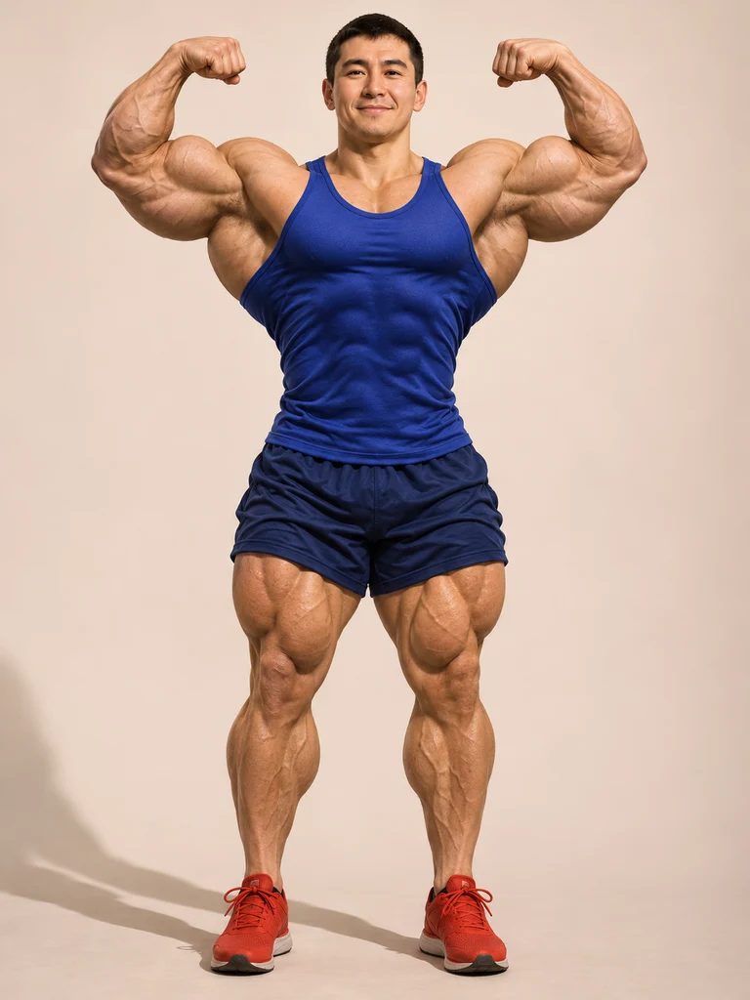

Кто ты?
Имя, сфера, поток. Чем занимаешься большую часть рабочей недели?
Первый сбор клуба выпускников
22 ноября 2026 / Уфа / 12:00–14:00

До первого подхода
Открываешь агента впервые. У него уже есть «руки» и «ноги», и ими можно работать. У каждого агента своя базовая форма.
 Codex
Codex Claude Code
Claude Code Kimi Code
Kimi Code
Устройство агента

Исходная форма
ИИ-модель выбирает следующий шаг. Харнес даёт ей тело, которое этот шаг выполняет. Посмотрим, как оно устроено.
Ритм повторений
Агент выбирает шаг, действует и смотрит, что получилось. Затем решает, продолжать или остановиться.
Руки агента
Встроенные инструменты определяют, что агент умеет делать. Подключения дают ему доступ к другим сервисам.
Программа тренировки
Всё, что модель видит в этот момент. Здесь лежат инструкции, рабочие материалы и навыки, нужные для текущего подхода.
Страховка
Права определяют границы действий. Ты решаешь, где агент действует сам и когда ему нужно твоё подтверждение.
Дневник тренировок
Память сохраняет то, что пригодится в следующий раз. Проверки показывают, можно ли доверять результату.
От устройства к тренировке
После нескольких подходов
В зале мы постепенно настраиваем харнес под себя. У агента появляются освоенные приёмы, нужные подключения и понятные границы самостоятельности.
Клубный абонемент
За месяц: две очные встречи, поддержка команды, записи и база знаний своей группы. Место в группе закрепляется на оплаченный месяц. Если пропускаешь встречу, её запись остаётся в базе. Пропуск не переносит срок абонемента.